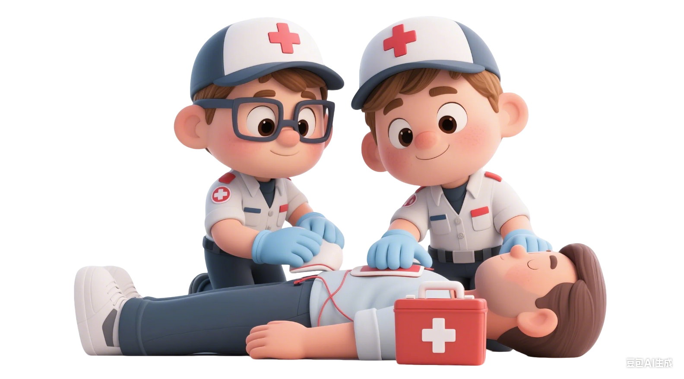
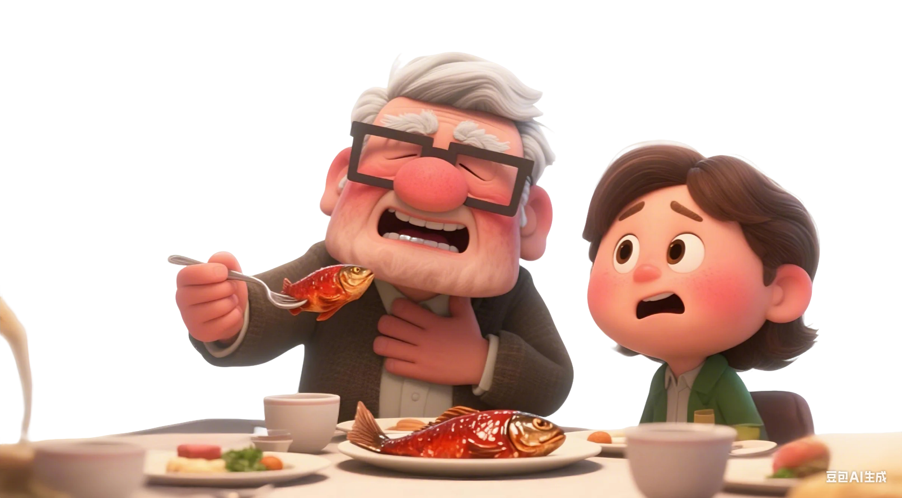
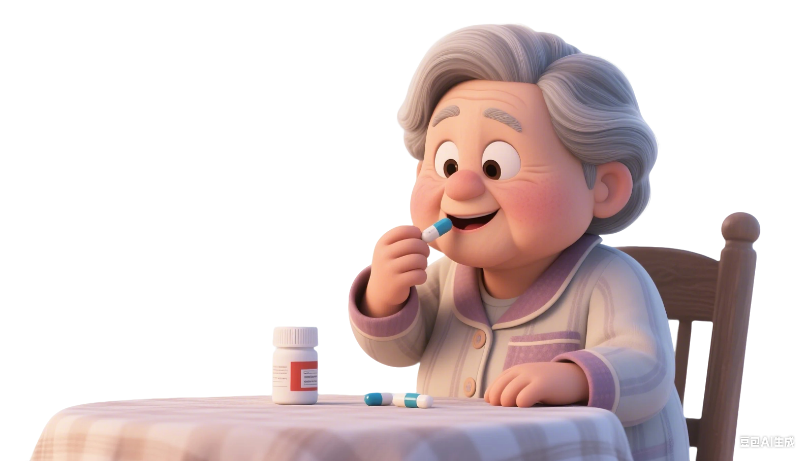

How old are you?
Please provide your age in years
Continue
小明突然流鼻血了，以下
不可取
的做法是：
A. 坐下来身体稍微向前倾
B.用冷毛巾敷额头
C. 用冷毛巾敷脖子
D. 仰头
小刘在厨房做饭时，不慎被热水烫伤了手臂，局部皮肤发红、有轻微疼痛但未起水泡。以下
正确
的做法是：
A. 用冰块直接敷在烫伤处
B. 在烫伤处涂抹牙膏
C. 先用冷水冲洗，再用干净纱布覆盖
D. 用酒精消毒后裹紧保鲜膜

小陈下班途中发现一名工人倒在建筑工地旁，身体接触裸露电线，周围有积水。此时小陈首先应如何行动？
A. 立即冲过去将工人拖离电线区域
B.站在原处拨打120并大声呼救
C. 木棍挑开电线，如无漏电再靠近
D. 直接开始检查工人意识和呼吸
图书馆内，一位老人突然从座椅滑落倒地。小王上前救助，见老人闭眼不动，此时
正确的
操作是：
A. 用力摇晃喊醒，观察反应
B.解衣领听呼吸音
C. 轻拍呼喊，观察反应
D. 直接触摸手腕桡动脉检查脉搏
篮球赛中，一名球员突发心跳骤停倒地。你发现其胸口正中有纵向陈旧伤疤，实施按压时应如何定位？
A. 直接按压手术疤痕上端
B.两乳头连线中点，避开疤痕区域
C. 剑突上两横指处垂直按压
D. 左胸第五肋间锁骨中线处
小美救助溺水者时，将其救上岸后发现口腔内有大量水草泥沙，无自主呼吸。此时开放气道前关键步骤
正确的
是：
A. 立即采用仰头提颏法打开气道
B.将患者侧卧，用力拍背排出水分
C. 用手指快速清理口腔异物
D. 直接开始人工呼吸冲开阻塞
一名急救员对无反应、无呼吸的成年患者实施心肺复苏（CPR）。以下关于其操作步骤的描述中，存在
错误的
是：
A. 触摸颈动脉搏动，同时观察呼吸
B.按压定位乳头中点，确保回弹
C. 清理异物，仰头提颏，捏鼻吹气
D. 按压深6cm，30次后1次呼吸

家庭聚餐时，爷爷正夹起一块红烧鱼，突然脸色涨红、双手掐住脖子，说不出话，也无法咳嗽。一旁的孙子小明发现爷爷表情痛苦，试图拍他后背但没有效果。此时，小明的爸爸应该怎么做？
A. 加大力度继续拍打爷爷后背
B.在脐上两指处向上向内冲击腹部
C. 仰头，用手指伸进喉咙抠取异物
D. 先喂爷爷喝口水，缓解喉咙刺激

小李俊在家吃坚果时，突然感觉喉咙被卡住，无法说话、咳嗽，脸色也开始发红。这种情况下，他若采用海姆立克自救法，
正确的
的做法是：
A. 双拳抵脐上两横指，向内上冲击
B. 在桌旁弯腰冲击脐上两横指处
C. 躺下用拳头反复按压胸口
D. 大口喝水冲开异物并拍打喉咙
郁先生被诊断为2型糖尿病，医生建议他进行饮食控制和运动管理。以下关于他日常管理的做法，
正确的
是：
A. 忌主食，仅食肉类与蔬菜
B.每周3次，每次20分钟跑步
C. 空腹监测，正常即停降糖药
D. 全谷物替代精米，定时定量用餐

邹阿姨患有高血压，一直在服用降压药。以下关于她日常管理的做法，
错误的
是：
A. 定时测血压，记录并向医生反馈
B. 少使用腌制品，烹饪时减少用盐
C. 血压正常即停药，不用监测
D. 每周5次散步，避免激动劳累

小王在厨房切菜时，不小心切到了左手食指，伤口较深，鲜血不断涌出。他立刻找来干净的纱布，此时采用直接压迫止血法的
正确
操作是：
A. 轻覆纱布不施压，防止加剧疼痛
B.紧按伤口，抬左手高于心脏
C. 按住伤口周围，避直接触碰
D. 撒消炎药粉，再简单包裹纱布
露营时小李被掉落的树枝砸中头部，左侧额头出现一道约3厘米的伤口，有少量出血且头晕。此时你手边只有急救包中的三角巾，如何使用三角巾对小李的伤口进行
正确
包扎？
A. 三角巾对伤口，拉紧打结止血
B. 检查伤口，三角巾盖伤后绕头固定
C. 平躺盖伤，颈后打结，立即活动
D. 不处理直接包扎，随意缠头打结
小宁正在公园救助一名昏迷的5岁女童（体重20kg），准备使用AED。打开设备后发现，AED包内只有一组成人电极片。小宁应该怎么做？
A. 贴右上胸及左下胸外侧
B.贴胸前正中及背后左肩胛处
C. 剪小电极片贴前胸后背
D. 将两片电极片重叠贴于胸前
乐乐发现一位成年男性突然倒地，经检查无意识、无呼吸。紧急情况下，她准备对这位男性使用AED，但发现他的胸口多汗、有药物贴片（硝酸甘油），左胸有心脏起搏器植入疤痕。此时，乐乐的
正确
操作是：
A. 因有起搏器，放弃AED，立即按压
B. 直接贴片开机操作
C. 擦汗，撕贴片，避起搏器贴电极片
D. 电击时同时按压